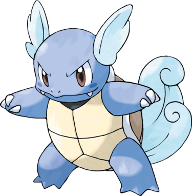

Carabaffe est une tortue bipède de couleur bleu indigo, dont les oreilles et la queue sont recouvertes d'une fourrure duveteuse de couleur blanche ; celle-ci fait d'ailleurs penser à des vagues. Ses grands yeux sont marron. Trois griffes ornent chacune de ses pattes, et une épaisse carapace le protège des coups.